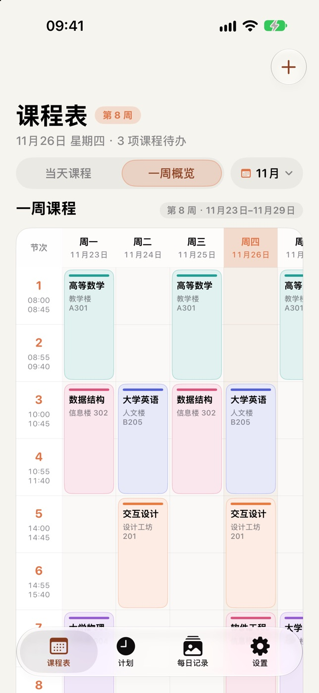
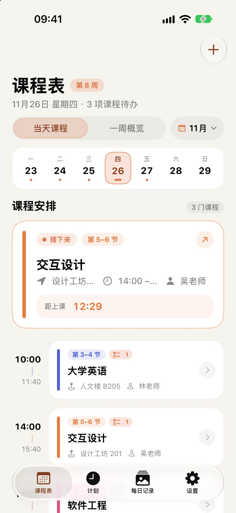
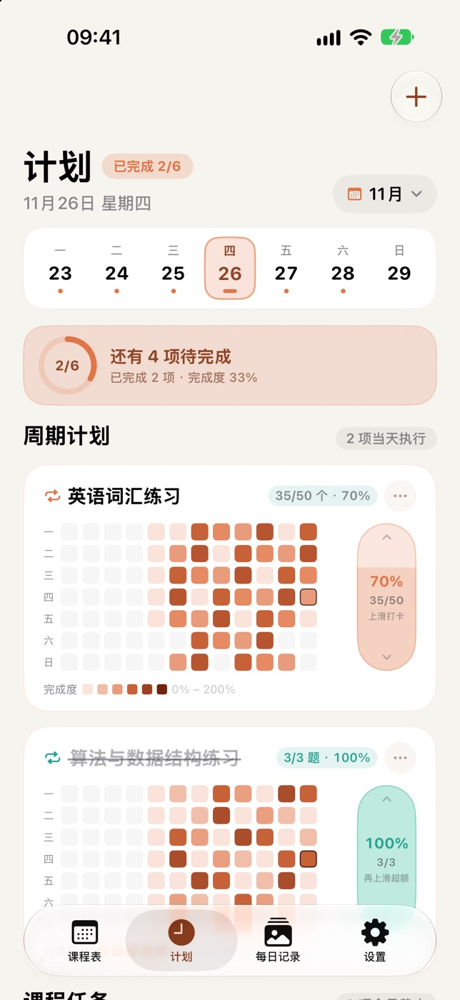
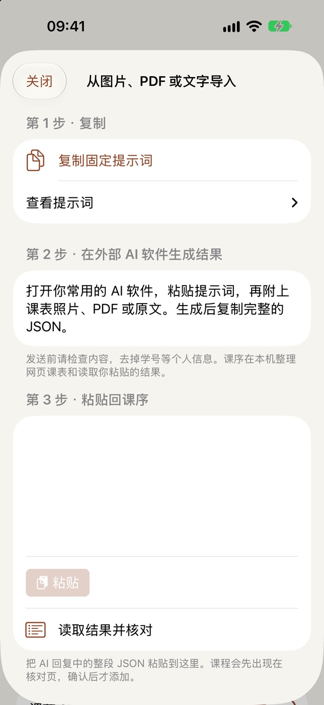
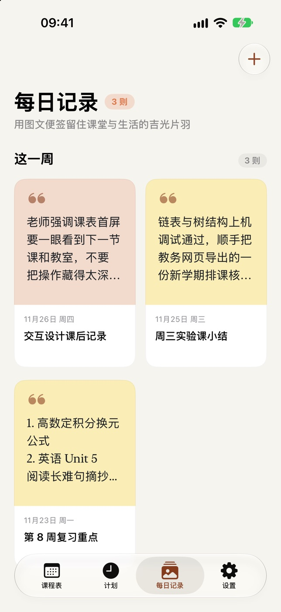
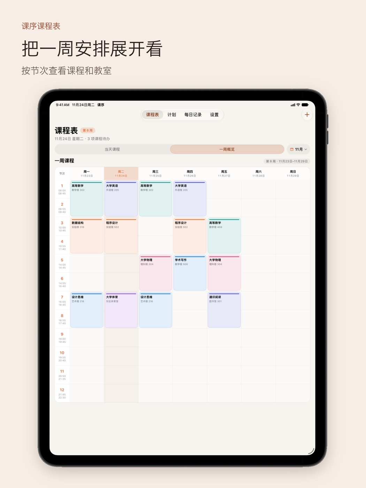
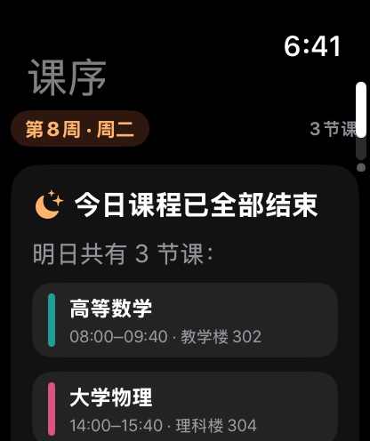

01
复制固定提示词
在「设置 → 从图片、PDF 或文字导入」一键复制提示词；也可以先打开教务网页提取表格文本，自动跳过学号等隐私字段。
课序 CourseFlow
从教务网页、截图或 PDF 里整理出课程，核对好单双周、节次和教室再导入。当天有几节课、哪门课要交作业，打开就能看见。

导入课表
App 里不内置任何在线模型服务。复制好格式提示词，交给顺手的工具整理完，粘贴回来逐条核对周次和单双周再保存。
在「设置 → 从图片、PDF 或文字导入」一键复制提示词；也可以先打开教务网页提取表格文本，自动跳过学号等隐私字段。
把提示词和课表照片、PDF 或文本发给你常用的 AI 工具，或自己对照格式整理成一条包含周次、节次和单双周的 JSON。
整段粘贴回 App 后，课序会在本机解析出每条课程草稿。未知周次或冲突节次都会标出来，确认无误才写入课表。
日常使用
把周课表、当天的作业截止时间、每日小习惯和课堂随手记放在一起，不用在好几个备忘录之间来回翻。
可自定义开学第一周日期、每天总节数与每节课上下课时间。两节、四节连堂课在周视图自动合为整块，重叠课程也会并排显示不遮挡。
同一门课周一、周四在不同教室，或者前八周单周、后八周双周，在「全部课程管理」里合并成一门课，每条排课各自保留时间与地点。
开课前高亮下一节课、教室和倒计时；每门课下的作业、实验和考试截止时间会自动汇总到当天与计划页，不再漏交作业。
给背单词、刷题、练琴设好执行星期和每日目标数量，在卡片上轻轻一滑就能记录完成进度，支持超额打卡与热力图回看。
主屏小组件按上下课时间自动翻页；课前十分钟起，灵动岛与锁屏实时活动会显示距上课与距下课计时，抬起手腕也能看下节课与剩余节数。
按周整理课堂随手记与照片便签（单条最多 6 张照片）。所有课表、任务、计划和便签都存在本机，随时可导出 JSON 备份或使用 iCloud 同步。
实机画面
以下画面均来自 Xcode 实机模拟器截图与多端同步视图。






下载与测试
不需要注册账号即可开始记录。如果手头暂时没有课表文件，也可以先在设置里一键添加示例课程体验。
适配 iOS 18 及以上系统，包含桌面小组件、灵动岛实时活动、系统日历同步、iCloud 个人备份与 Apple Watch 伴侣应用。
支持独立管理课程表、当天课程卡片、桌面小组件以及课表导入，下载安装包即可在手机上直接安装体验。
CourseFlow-Android.apk）
常见问题